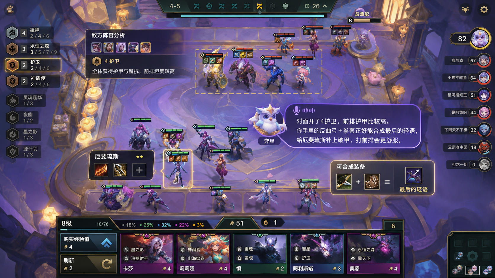
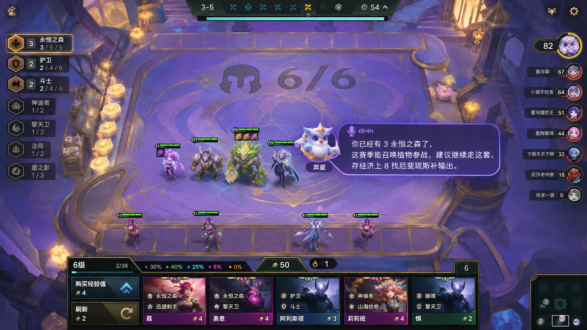
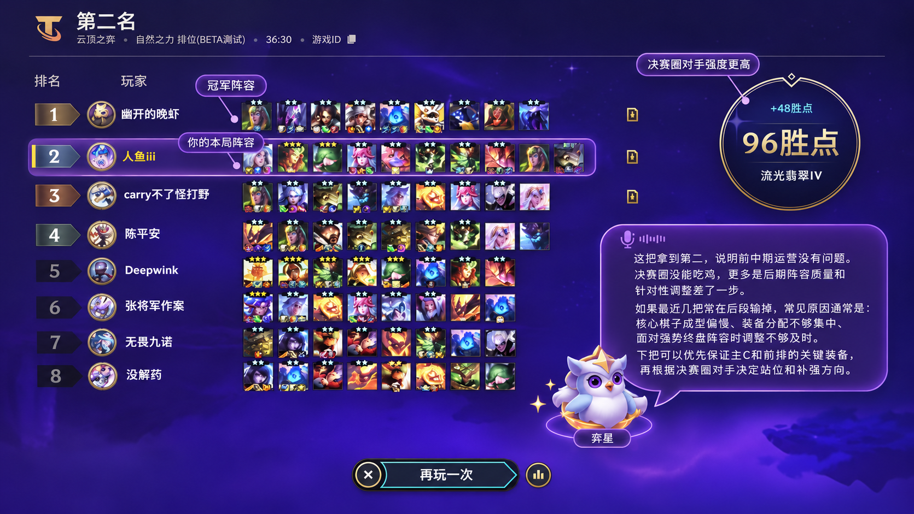
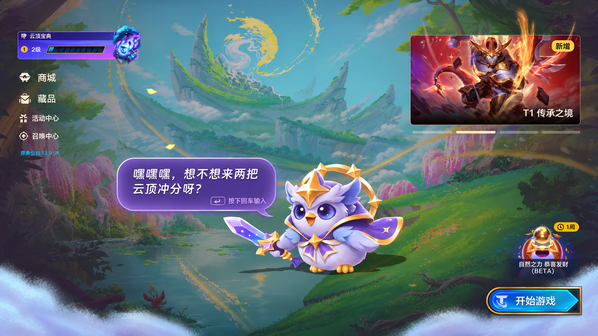

此为便于阅读的网页预览，保留原文内容与配图；排版以下载的 Word 文档为准。
《云顶之弈》AI 助手“弈星”产品设计方案
By: 郝泽唯尔
一、产品概述
1.1 产品定位
《云顶之弈》AI 游戏陪伴智能体“弈星”，面向新手及进阶玩家，围绕对局决策、情绪陪伴等核心需求，提供局内实时策略建议、语音互动陪伴、局后复盘总结等服务。通过智能战局分析与个性化交互，帮助玩家降低游戏理解成本和决策负担，在提升对局体验的同时，建立更具陪伴感的沉浸式游戏体验。
1.2 核心价值
“弈星”的核心价值主张是让每一类玩家都能在瞬息变化的棋局中获得及时的策略支持和有温度的陪伴，让每一局游戏都有新的收获。
《云顶之弈》历经多年赛季迭代，庞大的装备、羁绊和阵容体系形成了较高的学习门槛，官方版本更替对策略平衡的调整和创新很大程度的影响着玩家的游玩体验和游玩积极性。新手玩家缺乏贴合实时战局的引导，轻度休闲玩家难以持续投入时间学习版本变化，很难适应当下热门阵容和新兴的流派运营策略。重度玩家则容易陷入游戏反馈单一的体验疲劳；上述问题不仅影响单局体验，也可能削弱玩家的长期活跃意愿。
针对不同玩家的需求，“弈星”在对局中提供实时策略教学和阵容建议，补充传统新手教程，减少玩家反复查阅攻略、观看版本解读的成本；在对局结束及匹配间隙，通过个性化复盘、情绪反馈和自然语音互动，增加游玩过程中的持续反馈，即使固排不在也可以欢乐无限。
二、用户场景
2.1 用户分析
“弈星”的核心目标用户涵盖三类玩家：缺乏对游戏机制的系统认知，独立决策能力较弱的新手玩家；具备一定游戏基础，但受限于时间和学习意愿，难以持续适应版本变化的轻度玩家；具备成熟的运营经验，但容易形成固定打法，长期重复对局容易产生体验疲劳的重度玩家。
2.2 核心场景
玩家需求主要集中在三个阶段：
局内决策阶段，面对阵容转型、装备分配或对手变化，需要及时判断策略；
局后结算阶段，希望理解胜负原因，尤其是连续失利中的重复问题；
局外等待阶段，匹配间隙缺乏互动，独自游玩时容易产生疲劳感。
2.3 现有体验缺口
现有新手教程难以覆盖复杂多变的真人匹配实战情境；短视频及攻略社区虽有丰富的版本解读，但玩家仍需大量时间自行筛选、理解；老玩家没有固排感觉玩着也没意思，不愿意打开游戏
三、交互设计
3.1 角色设定
“弈星”定位为兼具策略指导和情绪陪伴属性的 AI 游戏搭子，以原创 Q 版星灵猫头鹰为基础形象，采用轻松、自然、富有亲和力的沟通风格。
3.2 交互形态
针对《云顶之弈》局内高信息密度、局外低操作压力的特点，“弈星”采用双形态交互设计：
局内： 以 Q 版麦克风按钮作为主要入口，支持鼠标长按及语音唤醒，通过语音播报、简洁对话框和局部视觉标记传递信息，尽量减少对游戏画面的遮挡。
局外： 以动态桌面宠物形态活动于主界面、商店及匹配页面，可在不同界面元素间跳跃，并响应鼠标悬停、靠近等操作；玩家按下回车即可展开对话框，进行实时语音交流。
3.3 触发策略
“弈星”遵循被动响应优先、主动介入适度的原则。局内仅在具有参考价值的决策节点主动提示；局外可在结算、匹配等待等低操作压力阶段主动发起互动。对于重复信息、高强度操作场景（如选秀）及玩家明确拒绝的情形，暂停非必要提醒，确保交互始终由玩家掌控。
四、核心功能
4.1 功能总览
“弈星”围绕玩家的局内决策、版本学习、局后复盘和局外陪伴需求，设计四项核心功能，形成覆盖完整游戏体验的 AI 服务体系。玩家可在任意游戏阶段通过语音口令“你好小奕”主动唤醒智能体，获取当前场景下的个性化回应。
核心功能 | 功能定位 | 预期价值 |
选牌搭配 | 根据当前棋盘、装备和对手阵容提供实时决策建议 | 降低判断成本，提高阵容调整效率 |
新兴阵容教学 | 将版本新流派的理解过程融入实际对局 | 降低版本学习成本，鼓励尝试新玩法 |
战绩复盘 | 分析对局表现，识别连续失利中的重复问题 | 积累游戏经验，减少无效试错 |
局外桌宠陪伴 | 在局外提供自然对话、情绪反馈和趣味互动 | 丰富情绪体验，增强持续陪伴感 |
4.2 功能详解
4.2.1 选牌搭配
功能定位： 针对局内阵容选择、棋子替换、装备合成和站位调整等决策，结合当前战局提供简洁、可执行的策略建议。
使用场景： S18 对局中，玩家使用厄斐琉斯作为物理主 C，对手拥有高护甲的 4 护卫前排。玩家尚有空余装备栏，且持有反曲之弓和拳套。
弈星提示： “对面 4 护卫挺肉的，反曲弓加拳套可以合最后的轻语，给厄斐琉斯补点破甲。”

设计要素 | 具体内容 |
触发时机 | 玩家主动询问；备战阶段出现阵容调整、装备分配等关键决策机会 |
输入信号 | 当前棋子、羁绊、装备、经济、等级、备战席及可观察的对手阵容 |
输出形态 | 简短语音建议，辅以关键棋子或装备区的局部高亮 |
预期效果 | 减少玩家犹豫和思考时间，提高决策效率和建议的实用性 |
4.2.2 新兴阵容教学
功能定位： 帮助玩家快速理解新赛季的棋子、羁绊及主流阵容，通过引导降低尝试新流派的门槛。
使用场景： 回流玩家习惯采用旧版本的速八运营思路，但已经从牌库中获得永恒之森系棋子，却不了解新羁绊机制，准备直接 D。
弈星反馈： 根据 OCR 识别结果，解释永恒之森的基本玩法，并引导玩家先保留现有过渡体系，再根据后续商店和装备情况决定阵容方向，鼓励玩家踊跃尝试新羁绊和新打法。

设计要素 | 具体内容 |
触发时机 | 玩家询问或识别到新版本强推阵容；新赛季初次接触陌生羁绊；当前棋盘出现适合尝试新流派的机会 |
输入信号 | 当前赛季阵容知识、已有棋子、羁绊、装备、经济及玩家已掌握的策略偏好 |
输出形态 | 分阶段的阵容教学、牌库高亮及简短语音讲解 |
预期效果 | 降低版本适应成本，提高新流派的尝试意愿和策略探索深度 |
4.2.3 战绩复盘
功能定位： 结合单局表现及历史战绩，识别玩家在阵容运营、装备选择和策略调整中的潜在问题，并在胜负结算后提供个性化反馈。
使用场景： 玩家连续三局使用相似的物理输出阵容，分别获得第六、第七、第八名。弈星通过对比近期战绩，发现玩家多次在后期使用缺少破甲装备的主 C，面对高护甲前排时输出不足。
弈星反馈： “三连跪确实难受。不过你这几把都有个共同点：后期碰上高护甲前排，主 C 的装备不太好打。下把我们试试提前准备破甲装备，或者换套阵容？”
复盘不仅解释当前结果，还应帮助玩家识别重复的决策习惯，形成可应用于下一局的经验。

设计要素 | 具体内容 |
触发时机 | 结算后玩家主动请求复盘，或出现连续失利、连胜等值得关注的战绩变化 |
输入信号 | 近期战绩排名、使用阵容、棋子星级、装备配置及已记录的关键对局信息 |
输出形态 | 简短的复盘总结、重复问题提示和下一局调整建议，配合情绪化语音反馈 |
预期效果 | 帮助玩家理解胜负原因、积累个人游戏经验，缓解连续失利带来的挫败感 |
4.2.4 局外桌宠陪伴
功能定位： 将弈星延伸为具有角色个性和互动趣味的游戏搭子，在局外提供轻松、持续的情绪陪伴。
使用场景：游戏结束后，玩家返回大厅等待下一场匹配。弈星以桌宠形态在启动界面中活动，对玩家的鼠标互动做出动作反馈，并可根据最近的游戏表现展开轻松交流。玩家也可以主动说出“你好小奕”，随时进入自然语音对话。

设计要素 | 具体内容 |
触发时机 | 玩家返回大厅、匹配等待、对局结束后的休息间隙，或主动发起交流 |
输入信号 | 玩家互动行为、当前游戏状态、近期胜负表现 |
输出形态 | 桌宠动作、表情反馈、实时语音闲聊、趣味回应及个性化情绪反馈 |
预期效果 | 丰富游戏非对局阶段的体验，增强角色认同和长期互动意愿 |
五、能力分层
5.1 内容分层
“弈星”将 AI 输出划分为三个层级，各层能力依据功能需要组合调用。
L1｜游戏知识层
对应功能： 羁绊解析 / 版本解读
负责输出棋子属性、装备效果、羁绊规则及版本更新信息，以准确、及时的知识检索为核心，为策略分析提供基础数据支持。
L2｜策略决策层
对应功能： 阵容教学 / 战局分析
结合实时战局、版本知识及玩家历史表现，输出具备针对性和可执行性的策略建议，帮助玩家完成即时决策及长期策略学习。
L3｜情感陪伴层
对应功能： 自由对话 / 战绩复盘
结合玩家交互偏好、游戏表现及角色设定，生成自然、个性化的情绪回应和娱乐互动，维持稳定的角色表达和陪伴体验。
5.2 技术分工
技术方案与内容分层一一对应，采用分层调用机制，兼顾知识准确性、策略有效性和交互自然度。
L1｜结构化数据库 + RAG
建立“弈星”专属知识库，通过官方数据接口定时同步数据，完成赛季更新、版本调整及热修数据的清洗、校验和增量更新。
英雄、装备等精确数值直接查询数据库；版本攻略等非结构化知识通过 RAG 检索，由 LLM 整合回答，避免依赖模型记忆过期信息。
L2｜OCR / VLM + 规则引擎 + LLM
OCR 识别棋盘数值，视觉识别模型识别棋子及装备，VLM 辅助理解复杂战局。结合 L1 版本数据，通过规则校验和策略评估筛选建议，由 LLM + TTS生成简洁的语音反馈。
战绩复盘通过历史数据统计识别重复问题，由 LLM 结合玩家记录生成个性化总结。
L3｜ASR + LLM + TTS
ASR 识别语音，LLM 结合玩家记忆及人格设定生成回应，TTS 合成语音；桌宠动作由事件规则及动画状态机驱动。
特点角色人格通过授权语料、RAG 和提示词构建，必要时采用监督微调（SFT）强化角色定制性，并通过专用 TTS 实现其他英雄的音色。
六、产品边界
6.1 功能边界
“弈星”坚持辅助决策、严格反作弊的产品原则，不代替玩家操作，不保证策略最优，不提供破坏游戏公平性的竞争优势。
信息边界： 严格遵循玩家可见信息原则，通过数据访问权限控制和提示词工程双重约束，禁止获取、推断或利用玩家当前视角无法获知的对手信息；实时辅助功能须符合游戏官方规则及授权要求。
策略边界： 仅提供基于已知信息的参考建议，不执行自动选牌、购买、装备分配等操作；当信息不足或判断依据不可靠时，不输出确定性结论。
人格边界： 主播形象、音色及专属语料须获得授权，明确标识 AI 身份，不冒充真人主播。
6.2 沉默机制
“弈星”采用主动沉默 + 用户自主控制的双重机制，避免 AI 对正常游戏体验造成干扰。
高强度操作： 玩家频繁刷新商店、调整阵容或处于关键倒计时时，暂停非必要提示。
低价值信息： 对重复建议、低置信度判断及短时间内已提醒的内容，主动保持沉默。
AI在线提示：保护玩家隐私，“弈星”在线时，常亮绿色指示灯，AI离线则关闭。
负面情绪： 当玩家表现出明显挫败或拒绝交流的意愿时，停止主动调侃和重复鼓励，避免增加情绪负担。
玩家可在个人账户隐私及 AI 设置中调整主动提醒、语音互动、桌宠显示和历史数据使用权限；关闭 AI 后，所有主动提醒、语音交互及桌宠相关功能同步停用。